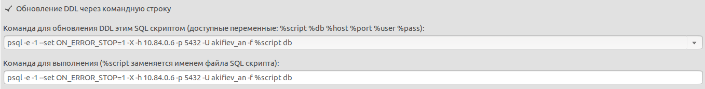

На основной панели проекта переключаемся в режим обновления БД (в нижней части панели переключаемся на вкладку Обновить БД).
На панели выбора источника БД указываем параметры для получения схемы БД на основании которой будет сгенерирован DDL скрипт для применения изменений к удаленной базе данных.
На панели действий нажать кнопку Получить изменения. После недолгого ожидания на панели сравнения отображается список различий с указанием типа изменения.

Флажками отметить объекты которые мы хотим обновить. При необходимости добавить дополнительные зависимости нажать на кнопку Добавить зависимости.... В появившемся окне добавить необходимые зависимости и подтвердить нажатием на кнопку OK После того как убедились, что необходимые объекты выбраны и зависимости добавлены нажать на кнопку Сгенерировать скрипт.... После окончания генерации скрипта откроется редактор наката изменений. Проверить сгенерированный скрипт. В случае необходимости внести изменения в скрипт наката самостоятельно
Для применения скрипта наката к базе данных необходимо указать способ обновления DDL. По умолчанию используется команда для выполнения использующая утилиту psql
Для выбора другой утилиты или изменения параметров команды вручную внести изменения в выпадающий список.
При использовании jdbc утилиты выбрать вариант Обновление DDL через JDBC. Ввести необходимые параметры для настройки соединения через JDBC.
После выбора способа обновления и ввода необходимых параментров нажать кнопку Обновить DDL. Скрипт наката будет применен для выбранной базы данных. В случае успешного применения изменений в Console view появиться соответствующее сообщение.